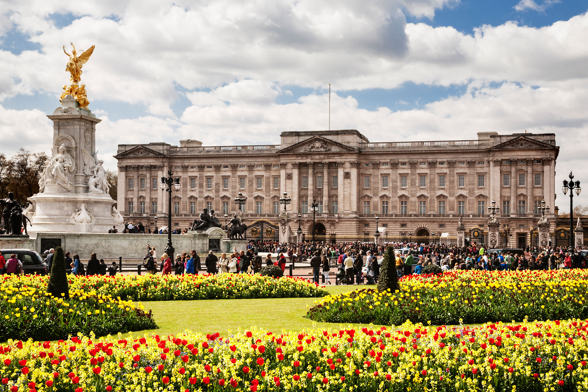
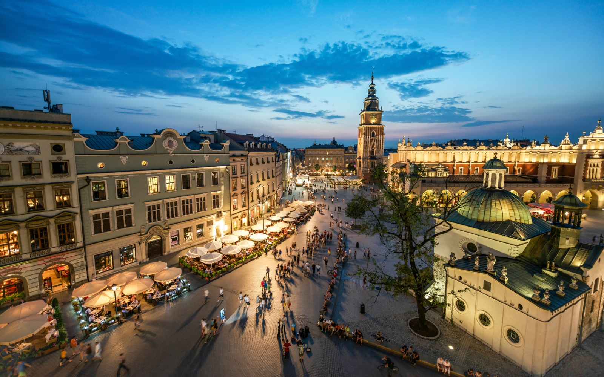

Englands capital, despit the obvious weather issues its a beautiful city with endless choices on things to do. A Hop on Hop off bus ticket is the best way to get around and see all the sights.
Amsterdam doesn't need much introducing. Rent a bicycle and explore the city. Stop at some coffee shops and relax. The canal tours also offer a great way to see the city.
The Berlin Wall is an obvious attraction here and is a must see. The nightlife in Berlin is something everyone should experience.
A stunning Eastern European city with tons of history. The bar crawls and nightlife here is fantastic but the must do in Krakow is of course Auschwitz. Take a day trip and learn about the history and pay your respects, something you cannot miss if you're here.
Following the line of exciting Eastern European cities with exceptional nightlife. Budapest also has a lot of history itself, museums from the first World War are very educational.
A beautiful and romantic city to explore by foot. Of course, treat yourself to a gondola ride along the canals.
The Colosseum is the pick of the tourist attractions but Rome is fantastic for little cafes and restaraunts on very cute backstreets. Not forgetting exquisite Italian food and coffee.
Catalonia. The coastal city has some brilliant beaches and fascinating architecture. If you're a football fan the Nou Camp is a sight to behold and if you're timing is right you may get to a game!
The romance capital of the world. But don't worry if you're not a couple. This is a still an exciting and wonderful city to visit. The Eifell tower, Champs-Elysees and Place des Vosges are certainly must sees.
1 - Wombats Hostel in London. Located by the Tower Bridge and severla tube stations it is a great location that allows you to get around the city. It also has a bar in the basement and 2 free drinks to guests.
2 - In Budapest visit the outdoor baths. Endless pools and hot baths is a strange but enjoyable experince. Also, every Saturday there are pool parties where they bring in DJs for the evening.
3 - EVERY City offers very good bar crawls. If its nightlife you're looking for, start off with a bar crawl. A great way to see the bars and get your bearings.